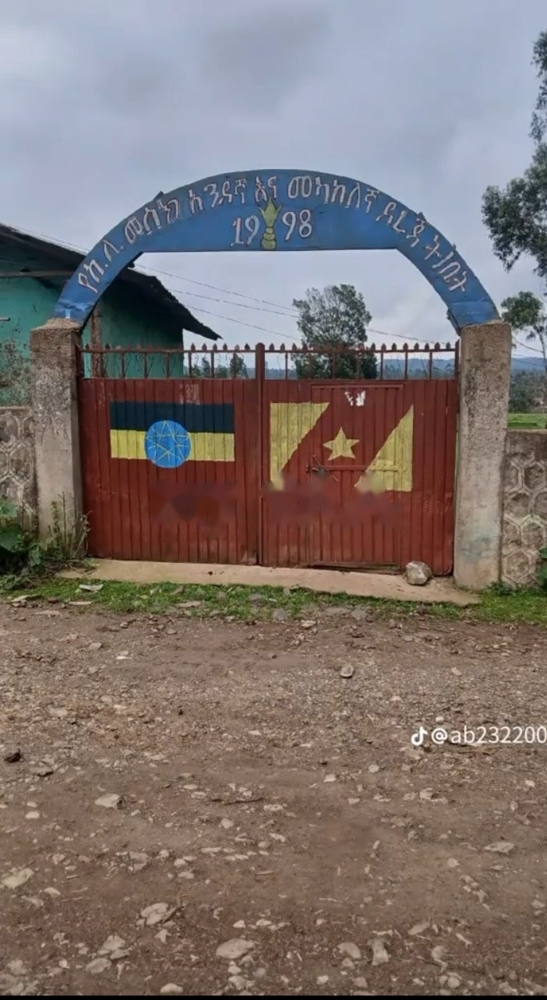

Kili Primary School

Kili Primary School is where my educational journey began. During my early school years, I developed basic knowledge, communication skills, and a love of learning.
This stage helped me build the foundation for my future education.
Back to Education PageMy Early Learning Journey
My primary school years gave me the foundation for my educational journey.